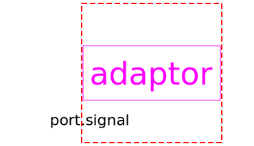

Obsolete package with components to send signals to a bus or receive signals from a bus (only for backward compatibility)
| Name | Description |
|---|---|
| Completely obsolete adaptor between 'old' and 'new' Real signal connectors (only for backward compatibility) | |
|  AdaptorBoolean | Completely obsolete adaptor between 'old' and 'new' Boolean signal connectors (only for backward compatibility) |
| Completely obsolete adaptor between 'old' and 'new' Integer signal connectors (only for backward compatibility) |